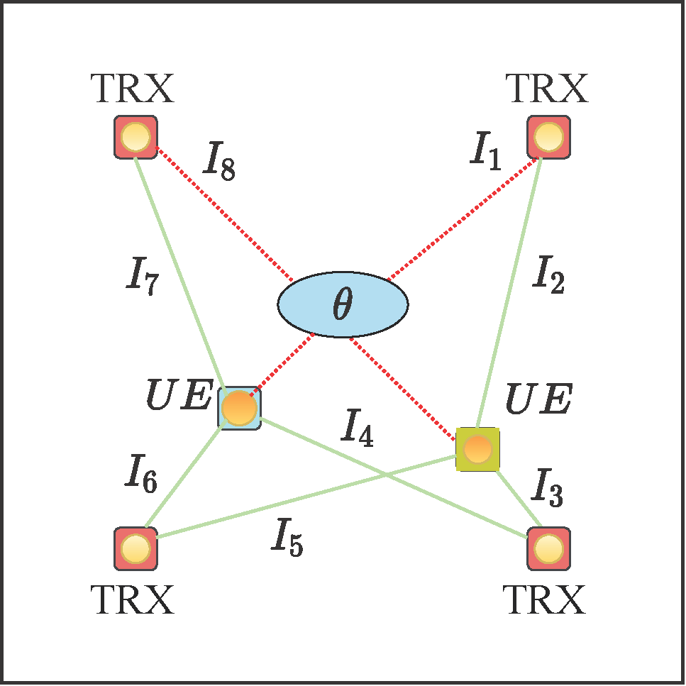

Probabilistic Model for Effect of Pedestrian on Indoor Optical Wireless Communication Systems
Illustration of probabilistic multilayer shadowing model.
Empirical marginal distribution of the radius of the human body cloud from orientation and measurements uncertainties.
The shadowing effect is one of the most critical concerns in optical wireless communication (OWC) systems, causing the system performance to degrade drastically as the signal path is blocked by an obstruction. In this research, we introduce a probabilistic hierarchical model of shadowing that relies on prior knowledge of object uncertainties such as its dimensions, as well as practical uncertainties like mobility and object detection error. Numerical results presented for both the line of sight (LOS) and non-line sight (NLOS) parts of the received OWC signal in indoor environments consider a pedestrian as the main moving object. The result shows a maximum standard deviation of nW from the randomness in the object's reflection, using the range of human body dimensions, when the location of the object is detected accurately; the variability can increase by orders of magnitude considering mobility uncertainty as well as object detection error. The model presented also enables the network to predict LOS blockage based on perfect knowledge of the object location.
Passive Pedestrian Detection and Localization
Crowdsourcing the blockage link status from different users.
Bird's-eye view illustrating the 2-D LOS blockage information.
In this research, we develop a passive pedestrian detection and localization algorithm taking advantage of LOS blockage information of the links between user devices and transceivers on the ceiling. Although this technique can employ any short-wavelength transmission, we illustrate our algorithm on an optical wireless communication (OWC) system that uses LEDs as energy sources and photo-detectors as receivers. These algorithms are calibrated for pedestrians, as they are challenging obstacles that often cause catastrophic shadowing in indoor VLC networks. We consider the LOS blockage between the user equipment (UE) optical transceivers and a network of optical transceivers on the ceiling as the observation dataset. The VLC network crowdsources the Users’ locations and the blockage status of the resulting LOS links. The algorithm employs this dataset to detect pedestrians’ presence and estimate their locations and radii. In our example, the target objects are modeled as cylinders with random radii. The location of the object can be predicted using a quadratic programming approach and refined gradually by including new blockage information from new users or users moving to another location inside the room. Simulation results show that the root-mean-squared (RMS) error can be less than 1 cm and 8 cm for estimating the center and the radius of the object, respectively. You can find the corresponding publications as following:
Optical wireless channel impulse response for different locations of the room.
In this project, we present a proof of concept for exploiting the optical impulse response reflection components in localization than considering them as destructive noise. We introduce an uplink visible light indoor positioning system that estimates the position of the users in the network-side of a visible light communications (VLC) system. The initial simulation results show the root mean square (RMS) positioning accuracy of 25 cm and 5 cm for one and 4 PDs scenarios, respectively. You can find the corresponding publications as following:
Past Projects
Geometrical Optical Positioning Algorithm Using Space-Color Coded Identifier
Experimental setup.
Orientation geometrical calculation.
Tilt compensation.
In this project, we propose an accurate visible light indoor localization system for a smartphone using the commercial light-emitting diode (LED) panels, which are used primarily for lighting. Each of the designed lighting panels contains a space-color-coded identifier, a matrix with a unique pattern of spatially separated colored LEDs, for labeling different positioning cells while the lighting color is kept white by balancing the number of different sets of colored LEDs. The advantage of this idea is that we do not use the time-frequency domain of visible light communication (VLC) networks resources for positioning signaling. Our positioning technique, called geometrical optics positioning algorithm (GOPA), is an angle of arrival (AOA)-based geometrical algorithm on smartphones to locate the device. The front-facing camera of the smartphone is used at the receiver side to capture the image. Experimental results show robust two-dimensional (2-D) and three-dimensional (3-D) positioning. The experimental mean positioning error for 2-D positioning is 0.54 cm, in case of ignoring the tilt. The experimental mean positioning errors for 3-D positioning are respectively 1.24 cm, and 1.85 cm for ideal non-tilted and non-oriented, and non-tilted but orientated scenarios. You can find the corresponding publications as following